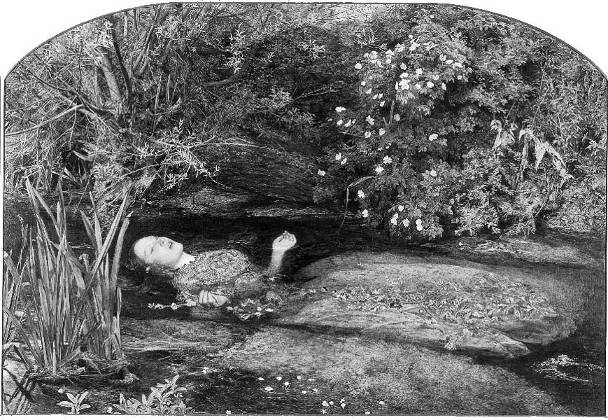

Korkunç yokluk uçurumu
“Macpherson Ağıtı” adlı eski bir İskoç baladında sığır hırsızı ve müzisyen James Macpherson’ın ölüm cezasını nasıl karşıladığı anlatılır:
Neşe içinde, güle oynaya,
Korkusuzca gitti
Bir türkü tutturdu ve başladı oynamaya
Asılacağı ağacın altında
Macpherson’ı biraz da hayretle takdir ediyoruz, zira hepimiz ölümden korkuyoruz, ya da en azından ölümden korkmamayı anlamakta zorluk çekiyoruz. Ama filozof Epikuros’un ölümden korkulmaması gerektiğine ilişkin kısa bir argümanı vardı:
Ölüm bizim için hiçbir şeydir; zira elementlerine ayrılan artık hissizdir; his yokluğu da bizim için hiçbir şeydir.
Büyük Uyku
Ölümün bizim için hiçbir şey olduğu fikrini tam anlamıyla kavramak oldukça güçtür. Ölüm isimle gösterilir, bizim için gelir ve işimizi bitirir: Şair John Donne, ölüme mağrur denildiğini söylerken kendisi ona “Mağrur olma ey Ölüm!” diye seslenir, kimi din düşünürleri ölümün fethedilebileceğini söylerken kimi de bundan pek emin değildir. Öyleyse o “hiçbir şey” olamaz, değil mi? Ama “hiçbir şey” aldatıcı bir kelimedir; kolayca belli bir “varolma” türüne delalet ediyor gibi yorumlanabilir: Varolmamaya. Schopenhauer’in yaşamlarımızın hiçlikle kuşatılmış olduğunu keşfetmemizle birlikte ortaya çıkan metafizik kaygıdan, Hiçlik’in ebedi uçurumunu ne zaman düşünmeye kalksak üstümüze çullanan varoluşsal endişeden bahsettiğini gördük (bkz. Neden Hiçbir Şey Değil de Bir Şey Var?). Mesela bir şeyi bekliyorken “hiçbir şey” bizi fena halde etkileyebilir. Bu kadar etkilenebildiğimize göre, etkilenecek hiçbir şeyin olmadığına inanmamız zordur. Bu nedenle korkumuzun yeterince gerçek olduğunu göstermek için büyük harf kullanırız: Bizi etkileyenin Hiçlik olduğunu söyleriz. Kimi filozoflar Hiçlik’ten korkarken kimileri korkacak hiçbir şeyin olmadığını düşünürler.
Ölümü soğuk, sessiz ve hareketsiz bir durum olarak tahayyül ederiz. Çoğumuza göre o çok uzun süre, aslında sonsuza dek değişmeden devam eden bir durum, Nihai Büyük Uyku’dur. Bu uyku ne kadar huzur dolu olsa da bizim gözümüzde yine de çok tatsızdır. Ama zaten bu yola girmek baştan yanlış adım atmaktır. Burada ölümün kendimiz için nasıl bir şey olacağını hayal etmeye çalışıyoruz. Ama işte tam da büyük yanlış budur. Benim ölümüm benim için hiçbir şeydir, çünkü o zaman “ben” diye bir şey kalmayacaktır. Ölüm ne soğuk, ne sessiz ne hareketsiz olacaktır, ne yerdeki bir delik olacaktır ne de, eğer cesedim yakılırsa, yakılmak gibi olacaktır. Ölümüm benim için hiçbir şey olacaktır. Benim için olan budur. Buna karşın dünya, elbette, hâlâ yaşayan başka herkes için olduğu gibi olmaya ya da belki değişmeye devam edecektir.
Aldatıcı İmgeler
Hayat sahnelerini tahayyül ederken kendimizi onlara dair bir perspektife sahip olarak imgeleriz. Himalayalar’ı hayal etmem istendiğinde benim için Himalayalar’ı görmenin nasıl bir şey olabileceğini hayal ederim. Cumhurbaşkanıyla tanıştığımı ya da sualtı dalışı yaptığımı hayal etmeye kalkışırsam Cumhurbaşkanının uzaktan görünüşünü, ya da ıslanmamı ve hava kabarcıklarının çıkışını imgelerim. Birinci şahıs perspektifinin amansız mevcudiyeti tüm tahayyüllerimizin içine akar. Ama ölümü imgelerken yapmamamız gereken tam da budur. Ölümü hayal ederken kendimizi tamamen ortadan kaldırmamız gerektiği için onu hayal edemeyiz. Başka bir deyişle ölüme dair birinci şahıs perspektifi olmadığından, hiç kimse kendi ölümünü hayal demez.. Hiç kimse kendisinin ölümünü yaşayamaz. İnsanlar diriltilmeden önce kısa bir süre ölü olarak kalırlarsa, o zaman ölü oldukları sürece dair hiçbir deneyime sahip değildirler (eğer bir deneyime sahiplerse, kendilerine geldiklerinde ne derlerse desinler, ölmemişlerdir).
Ölümü tahayyül etmekteki bu zorluk anlaşılabilir bir şeydir. Ama çoğu kimse bunu mantıksal bir zorunluluk olarak görmek yerine konunun gizemine bağlamaya eğilimlidir: “Ölümün nasıl bir şey olduğunu tahayyül edemiyorsak, bunun nedeni onu kuşatan gizemdir, ve onu daha korkutucu yapan da zaten budur”. Bu ayartıcı düşünceye karşı direnmeliyiz. “Ölüm” henüz doğmamış olma “durumundan” daha gizemli değildir: Tıpkı bizim de bir zamanlar doğmamış olmamız gibi, gelecek hafta ve gelecek yıl da dünya üzerinde henüz doğmamış birçok insan olacaktır. Doğmamış olmak daha önce var olmuş, ama şimdi saklı olan bir varoluş durumunu belirttiği için değil, bu durumda hiçbir özne, hiçbir benlik olmadığı için herhangi bir şey değildir. Biz var olmadan önce milyonlarca yıl geçti, ve kuşkusuz her birimiz göçtükten sonra da milyonlarca yıl geçecek. Uzun zaman ölü olacağız, ama bu uzun zaman doğmayı beklemekten daha sıkıcı olmayacak. Güneş sisteminin nihai yokoluşu, beni ilgilendirdiği kadarıyla, ben öldükten sonraki ilk yaz kadar hızlı olacak. Zamanı fethetmiş olacağım, ama maalesef zaferimin keyfini göz açıp kapayıncaya kadar bile çıkaramayacağım.
Sonsuza kadar ilahi söyleyen gök imgesinin pek de çekici olmadığından kaygı duyan Hıristiyanlar bazen yaşam-sonrasının zamansız olduğunu söylemeye kalkışırlar. Ebedi yaşamda, zamanı fethettiğimizi söylerler. Ama o zaman zamanın dışındaki yaşam ile yokoluş ve bilinçsizlik arasındaki farkın anlamlı olduğunu göstermek zorundalar. Bu yapılamayacak bir şeydir.

OPHELIA (1852)
Sir John Everett Millais (1829-1896)
Kendi ölümümüzü hayal etmeye kalkıştığımızda attığımız yanlış adımın birçok sonucu vardır. Bunu yapmaya çalışmak ve bunun ne kadar zor olduğunu görmek yaşam sonrasına ilişkin bir yığın fanteziyi ateşler. Şimdi bakın – işte ben kendi cenazemi imgeliyorum. Bedensel benliğim cemaatin arasında değil; şu zavallı cesedin ise böyle bir imgeleme sahip olması mümkün değil. O halde kendimin hayaletimsi bir gölgesi diyebileceğim ruhum benim için yas tutanların üzerinde dolaşıyor olmalı; ne yazık ki onlara iyi olduğumu, öbür dünyanın benim için hazırladığı serüveni beklediğimi söyleyemiyor. Bu fantezinin bu kadar ilgi çekmesi tuhaftır, oysa aynı mantığı izleyerek, ana rahmine düşmemizle ilgili anne ve babamızın uğraşlarına tanık olmamızı imgeleyebiliyoruz diye bir ruh ya da şimdi olduğumuz şeyin tinsel bir silik versiyonu olarak bir önyaşama sahip olduğumuzu düşünmüyoruz.
Geçmiş ve Gelecek
Felsefi açıdan, tahayyüllerimiz arasında niçin zamansal bir asimetri olduğu açık değildir – sözlüklerde “yaşam-sonrası” sözcüğü bulunmasına rağmen onun mantıksal ikizi “önyaşam” yer almaz. İnsanlar gelecek krallıktan söz etmelerine rağmen, geçmiş krallıktan söz etmezler. Bu önyargı zamanı geriye doğru değil, ileriye doğru yaşadığımızla ilgili önyargılarla bağlantılı olabilir. Geleceği planlarız, geleceğe yöneliriz, gelecekle ilgili kararlar veririz, ama geçmiş yaşanmış ve bitmiştir. Bu yüzden, zihnimizde ön planda olan “Geçmiş benim için nasıldı?” sorusundan çok “Gelecek benim için nasıl olacak?” sorusudur. Belki de donanımımız geçmişten çok geleceğe yönelmemizi gerektirecek şekilde oluşmuştur. Bunu da zihin gözümüzde canlandırdığımız senaryolar vasıtasıyla yapabiliyoruz. Zihin gözüyle tanık olduğumuz bu senaryolarla yapacaklarımızın provasını yapabiliyor, kendimizi çeşitli olasılıklara hazırlayabiliyoruz.
Geçmişe ve geleceğe ilişkin deneyimlerimiz arasındaki bu asimetri zaman içindeki özdeşliğimiz hakkındaki düşüncelerimizi etkiler. Filozoflar özdeşlik sorunuyla ilgili tartışmalarda fizyon ve füzyon örnekleri hayal ederler. Buna göre değişik şekillerde birleşme ve bölünme durumları kim olduğumuzu etkiler. Mesela beynimin bir bölümünün başka bir bedene, diğer bir bölümünün de farklı bir bedene nakledildiğini farz edin. Bu işlemler sonunda ortaya çıkan kişiler farklı yaşamlar sürdürecektir. Böyle bir geleceği tahayyül etmeye çalıştığımızda acil bir sorun ortaya çıkar: “Ben nerede olacağım?” Eğer belli bir zamanda bu kişilerden biri sessiz bir kırmızı odadayken diğeri gürültülü bir yeşil odadaysa, o zaman ben nerede olacağım? Benim bu zamanda var olduğumu varsaydığımızda ya birinde ya diğerinde olmam gerekir. Daha sonraki bir zamanda, kendisine kısmen sessiz bir kırmızı odada kısmen gürültülü bir yeşil odada olacak şekilde geldiği hiç kimse olmadığına göre, elimizde üç kesin seçenek vardır: ya kırmızı odada olacağım, ya yeşil odada olacağım, ya da nakilden sonra hayatta olmayacağım.
Ancak aynı düşünce deneyini geriye doğru uygularsak tek bir kesin cevap bulmamız kolay olmaz. Benim şimdiki beynimin farklı insanlardan gelen iki veya daha çok beynin birleşmesinden oluştuğunu öğrendiğimi farz edin. Çok etkileyici bir durum! Bu beynin bir bölümünün sahibinin 2000 yılının yazında bir gün Mont Blanc’a tırmandığını, diğer bölümünün sahibinin ise divanında patates cipsi atıştırdığını farz edin – ben neredeydim? Eğer açık bir şekilde bunlardan birini yaptığımı hatırlayabilirsem, o zaman o yönde giderim. Ama hatırlayamazsam, bir yandan dağa tırmanıştan bir yandan patates tadından oluşan karmaşık bir anıya sahip olabilirim. Yine de fazla dert etmeme gerek yok: “Neredeydim?” sorusu gelecekle ilgili koşut soru kadar acil bir soru değildir.
Gerçek bir bölünme ihtimaliyle karşılaşırsak ortaya çıkan insanların bir zamanlar ben olup olmadığı sorusunun özellikle tedirgin edici olmaması bir teselli olabilir. Eğer onlardan biri bu kelimeleri yazanın kendisi olduğunu, diğeri ise hayır onları kendisinin yazdığını söylerse, onların tartışmaları, çözülmesi gereken entelektüel bir sorun olmaktan ziyade bir eğlence konusu ya da telif haklarıyla ilgili hukuki bir dalaşma olabilir. Bu gerekirse yasa çıkararak halledilecek bir sorundur.
“Nerede olacağım?” sorusunun kesinliğinin de meselenin sadece birinci şahıs bakış açısından ele alındığı durumda geçerli olması dikkate değerdir. Eğer siz aynı şekilde parçalara ayrılırsanız, o zaman bizler ortaya çıkan kişilerin her birinin bir parça sizin gibi olduğu düşüncesinden hiç rahatsız olmayabiliriz. Bu kişilerden biri espri anlayışınıza, diğeri ise çabuk kavrama kapasitenize sahip olabilir. Birisi birlikte seyrettiğimiz futbol maçını hatırlama konusunda çok iyiyken, diğeri, tıpkı sizin gibi, şarkıma eşlik edebilir. Bu durum duygusal açıdan biraz rahatsız edici olabilir, ama bu kişilerden hangisinin siz olduğunuza yönelik acil bir sorunu gündeme getirmez. Bu da bisikletimi parçalayıp parçaları iki bisiklet elde edecek şekilde birleştirdiğimde bunlardan hangisinin orijinal bisiklet olduğuna ilişkin acil bir sorunun gündeme gelmemesine benzer. Yeni bisikletlerden alınan vergi eski bisikletlerden alınan vergiden farklıysa özdeşlik sorunu hukuki bir sorun oluşturabilir, ama metafizikçinin bu durumu dert etmesine gerek yoktur. Benzer şekilde, ortaya çıkan iki kişiden hangisinin operasyonu geçiren, diyelim, karım olduğu sorusu felsefi bir ilgi konusu olmaktan ziyade, özellikle iki eşliliğin yasadışı olduğu yerde, hukuki bir sorundur.
Hafife Almak mı?
Ölüme dönersek, onun bizim için hiçbir şey olduğu gerçeği onu hafife almak mıdır? Birçok bakımdan o korkunç ağırlığını korur. Sonuçta hayatın son bulması önemli bir olaydır. Birinin ölümüne neden olmak en ciddi suçlardan biridir, ve ölümden kaçınmak en büyük kaygılarımızdan biridir. Eğer beni uçurumdan aşağı iterseniz yasanın uygun gördüğü cezayı hak edersiniz; eğer ben tam uçurumdan düşmek üzereyken son anda beni kurtarırsanız minnettarlığımı kazanırsanız. Peki, ölüme yüklediğimiz bu önemi Epikuros’un dersiyle uzlaştırmamız zor mu?
Kesinlikle değil. İlerideki kendi yokoluşuma bakarak elden geldiğince ondan kaçınmayı umabilirim, ama bunu ondan kaçınmayı başarırsam benim için neler olacağını bunu başaramazsam neler olacağıyla karşılaştırarak yapmam. Karşılaştırmanın ikinci ayağı eksiktir. Ama ondan kaçınmayı basitçe eğer böyle yaparsam benim için olacak şeylerden dolayı isteyebilirim. Bunu başarabilirsem, çok istediğim bir şeyi elde edebilirim. İlkbaharı görmeyi, kuşların sesini dinlemeyi, çocuklarımla birlikte olmayı ya da bir kitabı bitirmeyi isteyebilirim. Ölürsem bunların hiçbirini yapamayacağım. Bunun canımı sıkması da makul bir şeydir. Beklentilerin ve amaçların gerçekleşmeden bir yaşamın sona ermesi kedere neden olur. Ama burada öznenin düştüğü “durum”dan ziyade planlarının ve neşesinin yok olmasına kederleniriz. Ölen bir çocuğun yaşamı asla gerçekleşmeyecek potansiyellerle dolu olduğu, ama yaşlı biri için bu artık geçerli olmadığı için genç birinin ölümüne yaşlı birinin ölümünden daha fazla üzülürüz. Bu durumlarda haklı olarak daha derin yas tutarız. Ama yas tutan, kederlenen hiçbir şeye kederlenmeyen ölü değil, bizleriz.
Bizler sosyal hayvanlar olduğumuz ve normal koşullarda arkadaşlarımızın, ailemizin ya da sadece tanışlarımızın ve yabancıların yaşamda kalmalarını önemsediğimiz için, cinayet bize dehşet ve korku salar, ve iyi ki de salar. Nihayetinde kendi benliğimizi korumak hepimizin başta gelen dertlerinden biridir. Ayrıca onurlu bir yaşam sürmek ve acıyla sıkıntıdan uzak durmak isteriz. Ama doğa acımasızdır. Bu iki kaygı birbirleriyle çatışabilir. Öznenin yaşamı tahammül edilemez bir hal aldığında ve bu şekilde devam edeceği beklendiğinde, kendini koruma arzusu terk edilebilir. Belki de o zaman arzulanan çıkış yolu intihar olabilir. Elbette bu talihsiz bir durumdur, ama burada talihsizliği doğuran bu seçeneğin tercih edilmesine yol açan sıkıntılardır. Ne olursa olsun dindarlar intiharı lanetlemeyi seçerler. Biraz da mantıksızca, ölümden sonra mutlu bir yaşam vaat eden aynı imam ya da papaz bunun kutsala saygısızlık edilerek, “Tanrı’yı oynayarak”, yaşamın kutsallığının hiçe sayılarak elde edilmesini yasaklar ve böyle bir eylemi başarıyla gerçekleştirenleri kendileri cezalandıramasa da Tanrı’nın muhakkak cezalandıracağını vaaz eder. Başarılı bir intihar olayında kimi suçlayacağı konusunda afallasa da, zanlının yokluğunda onun onurunu kıracağını düşündüğü her şeyi yapar: Anısını karalamaya çalışır, cenaze törenini yapmayı reddeder ya da ona yardım edecek kadar merhametli olanlara zulmeder.
Çoğu konuda olduğu gibi, bu boşinanca karşı da en incelikli reddiye David Hume’dan gelir. Bunun için bakılması gereken yer Hume’un 1755 tarihli ünlü “İntihar Üzerine” adlı makalesidir. Hume doğanın sabit ve değişmez genel yasalar altında işlediğine ve insanların tüm diğer hayvanlar gibi içinde bulundukları koşullara uyum sağlamalarına imkân veren kapasitelere sahip olduklarına işaret eder. Eğer insanın bu kapasiteleri insanın kendisini yok etmesini getiriyorsa, bu evrenin akışına ya da bu evreni yaratan ve destekleyen Yüce Varlık’ın takdirine karşıt bir eylem değildir. Eğer öyle olsaydı, güçlerimizi her kullanışımız “suç” olurdu:
Fransız boşinancı, kızamık için aşılama yapmanın ya da gönüllü bir şekilde hastalık ve salgınlar çıkarıp tanrısal takdirin işine karışmanın dinsizlik olduğunu söyler. Modern Avrupalı boşinanç, kendi hayatımıza son vermenin ve böylelikle yaratanımıza isyan etmenin dinsizlik olduğunu söyler. Ben de ev inşa etmenin, toprağı işlemenin ve okyanuslara açılmanın neden dinsizlik olmadığını sorarım. Tüm bu eylemlerde doğanın akışı içerisinde bir yenilik üretmek için, zihnimizin ve bedenimizin güçlerini kullanırız; ve hiçbirinde daha fazlasını yapmayız.
Kendi canımızı kendimiz aldığımızda “Tanrı’yı oynuyorsak” o zaman bir tarlayı işlediğimizde ya da şemsiyemizi açtığımızda da aynı şekilde Tanrı’yı oynuyoruz. Hume daha sonra dikkatini doğanın “beni bir nöbetçi gibi bir nöbet yerine yerleştirdiği ve orayı çağrılmadan terk etmemin görevi terk etmek olduğu” şeklindeki saçma fikre çevirir:
“Beni şu anda bu mekâna oturtan hiç şüphesiz tanrısal takdirdir. Ancak ben doğru düşünüp, görev ya da durumumu terk etme suçlamasına maruz kalmadan bu mekânı terk edemez miyim? Ben öldüğümde, beni oluşturan ilkeler evrende görevlerini yerine getirmeye devam edecekler ve bu bireysel yaratığı oluşturdukları gibi, büyük dokuda da yararlı olacaklardır. Bu fark benim bu kapalı mekânda oturmamla dışarıda durmam arasındaki fark gibi bütün için önemli olmayacaktır. Benim için bir değişiklik diğerine oranla daha önemlidir ancak evren için öyle değil.”
Doğa bize hiç şüphesiz ölüm korkusu vermiştir. Ama doğa birçok insana üstesinden gelebildiği örümcek ya da yılan korkusu da vermiştir.
Gerçekten de olası bir intiharı önlemeye çalışmak herkesin görevidir; hayatın ne olursa olsun tahammül edilemez olmadığı, işlerin düzeltilebileceği, şu an için iyi görünen intihar seçeneğinin ayartısına kapılmamak gerektiği, sıkıntılara bir süre dayanmak gerektiği söylenebilir. Ama bütün bu ikna çabaları başarısız kaldığında –ne de olsa şifasız bir acı verici hastalık durumunda bunların hiçbir etkisi yoktur– ve kurban kendi ipini çekmeye karar verdiğinde, o zaman bu kararın hatalı olduğunu göstermek imkânsızdır. Çoğumuz ölümü Macpherson gibi cesaretle karşılamak isteriz, ama hiç şüphesiz onursuzca, acıyla yaşayarak sevdiklerimize yük olmaktansa ölümü tercih etmek de takdire şayandır. Bu duruma düşersek ya da düştüğümüzde işi doğaya bırakmaktansa çok daha zarif bir çıkış yapmamızı sağlayacak planları yaparak sahneyi terk etmek de takdire şayandır.
Birbirimize özen göstermek her birimizin ödevi olduğu ve kendimizi öldürmek çok zor olduğu için, ölüm olayında da birbirimize yardım etmenin ödevimiz olduğunu söyleyebiliriz. Özenli bir yardımın her şeyi çok daha kolaylaştıracağı yerde bunun alternatifi çoğunlukla acı dolu bir ölümü seyretmektir. Ancak birçok ülkenin yasası birinin ölmesine yardım etmeyi cinayetle eşdeğer görmektedir. Hume’un yıktığı boşinançlardan başka bunun için öne sürülen neden şudur: “İnsanlara ölmeyi isteyip istemediklerini soranların bizzat kendileri kendi bencil nedenleriyle onların ölmelerini isteyenler olabilir.” Hiç şüphesiz bu konuda bazı tedbirlerin alınması gerekir, ama en az bunun kadar kesin olan bir şey de bu tedbirlerin ancak intihara yardım etmenin yasal olduğu yerde kusursuzca işleyeceğidir.
Var-Olmayan
Ölümden bir yokoluş biçiminde bahsederek ölümden sonra yaşam olduğu iddiasına yüz vermedim. Bana göre böyle bir inanca kapılmamızın altında daha önce karşılaştığımız gibi imgelem gücümüze dair bir hata yatıyor. İnsanlığın öbür dünyadaki hayata dair uzun süreli takıntısı felsefi bir hatanın sonucudur. Kimileri öte dünyayı bu dünyayı model alarak tatmin edici bir şekilde tasvir edebileceklerine inanırlar. Bu durumda ruh bir hayalet, kişinin gölge bir versiyonu, insanların gördüklerini iddia ettikleri bir şey, ölüler dünyasından bir elçidir (hayaletlerin baştan aşağı giyinik olduğu düşünülünce onların giysilerinin de muhtemelen ölüler dünyasının zırh takımlarından olacağı açıktır!)
<>
İnsanlığın öbür dünyadaki
hayata dair uzun süreli
takıntısı
felsefi bir hatanın
sonucudur.
<>
Kendi zihinsel tasarımlarımız içinde bu görüntüler oldukça gerçek olabilir: Bir eşin ya da çocuğun öldüğü ev onların yokluğuyla “perilenebilir”, yani, eşin ya da çocuğun yokluğu onları sevenlere büyük bir acı verebilir ve bu acıyla harekete geçen tahayyül gücü sanki onlar hâlâ varmış gibi bir his oluşturabilir. Ama olmayan bir şeyin ziyareti, tıpkı İngiltere’de timsahların namevcut olmasının bir şey olmaması, ya da İngiliz timsahlarının var-olmayanın gölge dünyasından elçiler olmaması gibi, var olan bir şeyin ziyareti değildir.
İster insan ister timsah olsun bir şeyin var olmamasında gizemli hiçbir yan yoktur. Bir şeyin olmaması hiçbir gizemi olmayan bir olgudur. Daha düne kadar var olan bir şeyin yok olması büyük bir acıya ve üzüntüye yol açabilir. Doğrusu birçoğumuz gibi ben de içten içe felsefi çalışmalarımla ilgilenebilecek kadar yaşadıktan sonra ölmeyi ve ölümüme hiç olmazsa dostlarımın ve ailemin biraz üzülmesini umuyorum. Ama o benim için dert edeceğim bir şey olmayacak. Öyleyse daireyi kapatalım: “Ölüm bizim için hiçbir şeydir.”